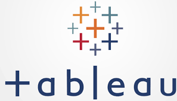

Performing data analysis on Queensland waste water dataset to track regions in Queensland that are exposed to the virus. With the help of data, vulnerable sites identified can then be reported to stakeholders in Queensland Health department, so that timely measures can be taken.

Covid-19 data exploration performed (On Global data from Our World in Data webpage) using SQL in Microsoft SQL server management (SSMS). Further, views created in SQL were used to generate a Dashboard for visualization in Tableau Public
Basically cleaning the Bike-Buyer dataset and then creating pivot tables. Based on the pivot tables, generating a dashboard to show 3 analysis on Bike-Buyer dataset.

In this project I performed web scrapping on Amazon website to extract the product Title and associtated price. Also creating a function to automate the price check for that product and notify me on an email if the price drops.

This holds all of my Tableau Dashboards. There are 3 dashboards. The first one is associated with the SQL data exploration on Covid-19 dataset. The second one is basically visualizing crime trends in different postal areas of Sprinfield. The last one is visualization of rent pricing and revenue generated by AirBnb.
An mvp application was designed to generate digital tokens named Grand and distribute it to the user successfully completing an online course on Grandshake learning platform, as a reward. My role was to extract the transactional data from Algorand blockchain and display it on the user end. The model is still in a primitive phase.